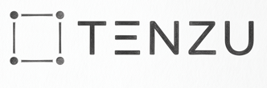
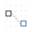
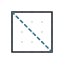

A
見て写す

点描写プリント
の専門店
点と点がつなげるようになったら、点描写を。
空間認知の土台をつくる。


§1 · 点描写 とは
点と点をつないで見本通りに図形を描く練習です。鉛筆を持つ前に「どこを見るか」を決める時間が、図形と漢字書字の土台になります。
計算と読み書きはやっているけれど、図形は手薄。点つなぎは楽しんでいるけれど、次が見当たらない。そんな家庭に渡せる「次の 1 枚」を、9 タスク × 5 レベル × Vol 細刻みの体系で整えています。
TENZU は受験準備の教材ではありません。漢字ドリル・計算ドリルと並ぶ「家庭の当たり前の練習」として、紙と鉛筆で、机に向かう数分の中に置きます。
§2 · TENZU の 9 タスク
同じ「写す」でも、見て写す・かたちを動かす・重ねる・分ける・立体でとらえるの 4 つの段で異なる力が育ちます。各群は独立に始められ、Lv.1 から Lv.5 まで Vol 細刻みで進めます。
§3 · 家庭での続け方
毎日続けることが目的ではありません。続けやすい設計に整えたうえで、その日できる 1 枚を渡しています。
各 SKU から代表 1 枚を無料で公開しています。難易度・出題数・親向け解説までそのまま確認できます。
¥200 一律。サブスクなし。レベル選びガイドで、お子さんの「今」に合う 1 枚を選べます。
A4 1 枚に収まる設計。書く学習は紙とペン。画面から離れて、点と点を線でつなぐ数分を作ります。
同じ SKU を繰り返してもよいし、次の Vol に進んでもよい。続け方は家庭ごとで違っていい設計です。
§4 · おためし
親の手元で、模写タスクを 5×5 まで作って印刷できる無料ツール。子に画面を見せる前の、親の確認用です。
画面上で問題を組み立て、PDF として書き出して印刷します。子どもに画面で解かせる機能はありません。点描写の練習はあくまで紙の上です。
5×5 を超える出題・線対称・回転・立体は商品 PDF に収録しています。メーカーは「親が今日 1 枚を作るための道具」として設計しています。
メーカーを開く →